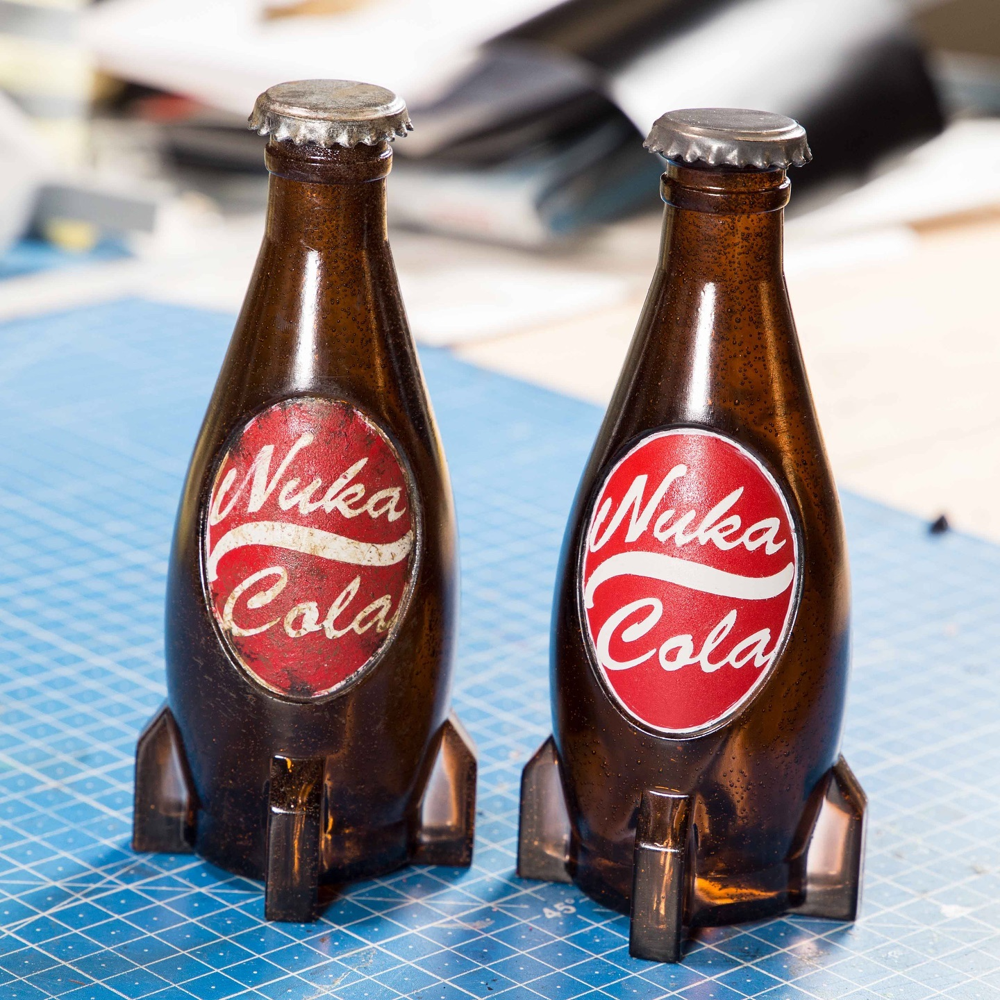

Nuka Cola

We are excited to bring you an entire line of Nuka-Cola products! Although we wanted to
share the official secret recipe-including all 17 different fruits-we were unable to settle
some legal differences between Vault-Tee™ and the Nuka-Cola Corporation. However, we've
put our best scientists on the task and have come up with that cold refreshing Nuka -Cola
· taste with a 566 percent more efficient use of fruit! Consider it our gift to you !
Ingredients
- 2 cups water
- 3 cups sugar
- Zest and juice of ½ orange
- Zest and juice of ½ lime
- Zest and juice of ½ lemon
- 1 cinammon stick
- 1 cinammon pods
- 3 cardamone pods
- ½ teaspoon coriander seed
- 2 star anise
- ¼ cup browning sauce
- 1 teaspoon vanilla extract
To make Nuka-Cola syrup:
- Combine the water, sugar, orange zest, lime zest, lemon zest, cinnamon stick, cardamom
pods, coriander seeds, and star anise in a large saucepan and place over medium-high
heat. Whisk until the sugar has dissolved and then bring to a boil. Reduce the heat to low
and simmer for 10 minutes.
- Remove from the heat and strain into an airtight container. Add the orange, lime, and lemon
juices (should be about 1 cup juice total). Mix in the browning sauce and vanilla extract.
Once cooled, cover and store in refrigerator for at least 12 hours and up to 2 weeks.
To make an ice cold glass of Nuka-Cola:
- Combine 1 cup seltzer water, ice, and 5 to 7 tablespoons of Nuka-Cola syrup,
then stir together
Home page